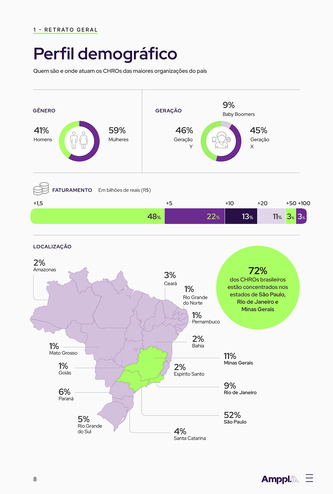
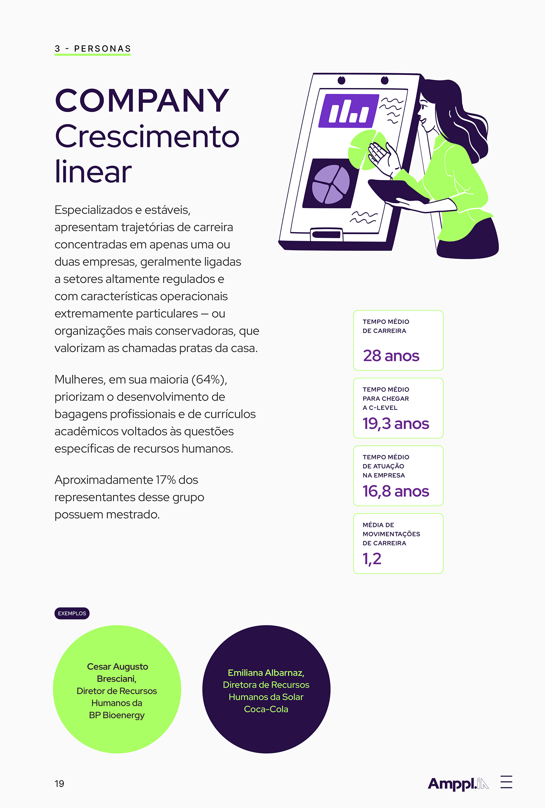
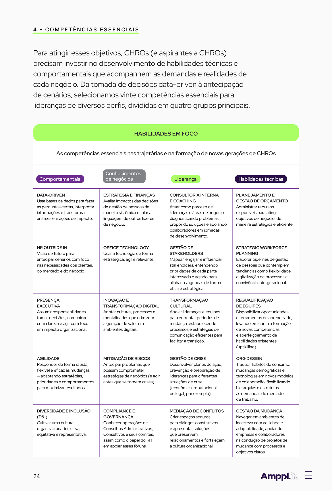

Digital book
Livros e dossiês informativos com visualização de dados. Em colaboração com Thomaz Gomes (Ampplia) e Estúdio Nono (Flash).



Livros e dossiês informativos com visualização de dados. Em colaboração com Thomaz Gomes (Ampplia) e Estúdio Nono (Flash).


